Realtime Collaboration
Chat messages, Kanban board movements, team notifications, and application status updates need low-latency fanout. If a student drags a card or sends a message, every connected collaborator should see it immediately.
SkillForge is a full-stack platform that connects students with enterprise projects. The interesting engineering problem was not simply building CRUD screens; it was keeping chat, Kanban updates, notifications, and user interaction responsive while a separate AI service evaluates high-dimensional semantic similarity between student profiles and project requirements.
Marketplaces look simple from the outside: users sign up, companies post projects, students apply, and both sides collaborate. Under the hood, SkillForge had two fundamentally different execution profiles living in the same product surface.
Chat messages, Kanban board movements, team notifications, and application status updates need low-latency fanout. If a student drags a card or sends a message, every connected collaborator should see it immediately.
AI matching requires profile normalization, project requirement extraction, embedding generation, cosine similarity, ranking, and notification generation. This is CPU-heavy and should not live in the same hot path as WebSocket traffic.
The system needed to stay understandable as features grew: authentication, projects, users, chat, badges, XP, matching, notifications, and collaboration. A messy monolith would make every new feature risky.
A strong engineering case study should not just list technologies. It should explain why each technology exists, what it replaces, and what trade-off it introduces.
| Decision | Why | Rejected Alternative | Trade-off |
|---|---|---|---|
| Go backend | Long-lived WebSocket connections and concurrent API traffic benefit from goroutines and predictable runtime behavior. | Single Python backend for app + AI. | Go is less convenient for ML libraries, so model work moves to Python. |
| Python AI service | SentenceTransformers, embedding experiments, and ranking logic are faster to iterate in Python. | Embedding logic inside Go. | Requires a clear internal API contract. |
| SvelteKit frontend | Realtime UI updates stay simple with compiler-driven reactivity and less client runtime weight. | React SPA with heavy global state. | Smaller ecosystem, but lower complexity for this app. |
| MongoDB documents | Profiles, projects, messages, notifications, and gamification state evolve quickly in an MVP. | Rigid relational model first. | Requires discipline around indexes and document boundaries. |
| WebSocket event model | Collaboration should be pushed by the server, not rediscovered by polling. | Polling-based refresh loop. | Requires reconnect, room validation, and event idempotency. |
The Go service owns the realtime application core: HTTP APIs, authentication, project workflows, MongoDB repositories, chat routing, Kanban events, and notifications. The Python service owns semantic matching because the AI ecosystem, embedding libraries, and model iteration speed are better there.
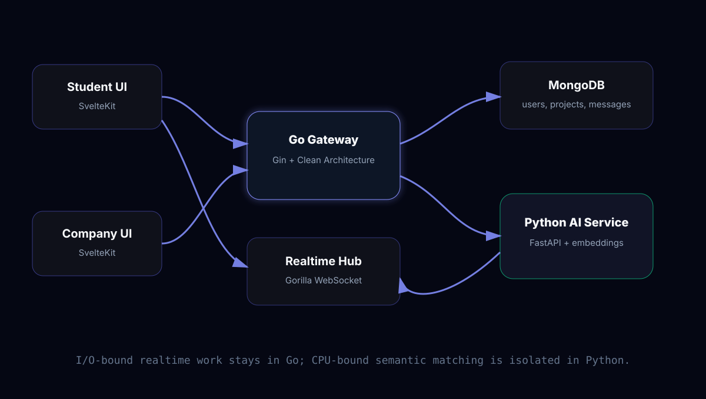
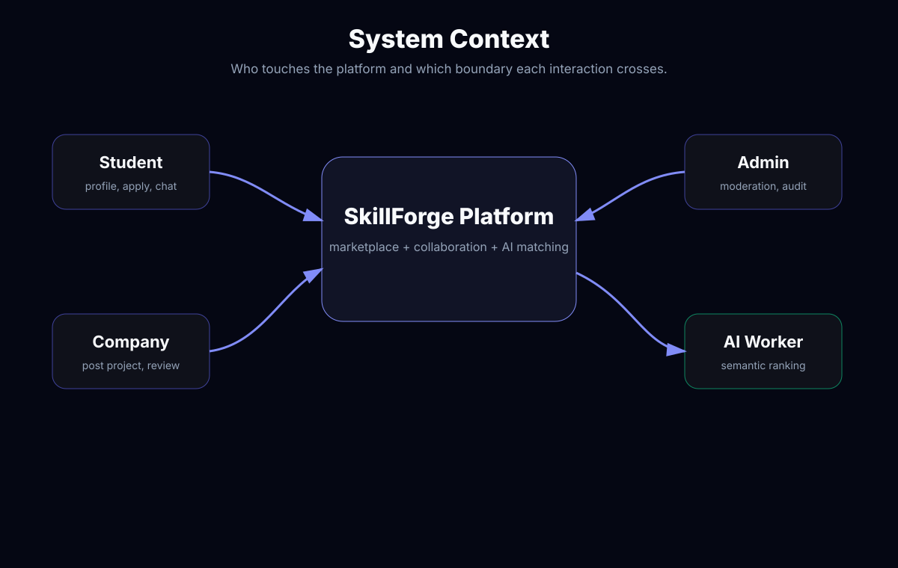
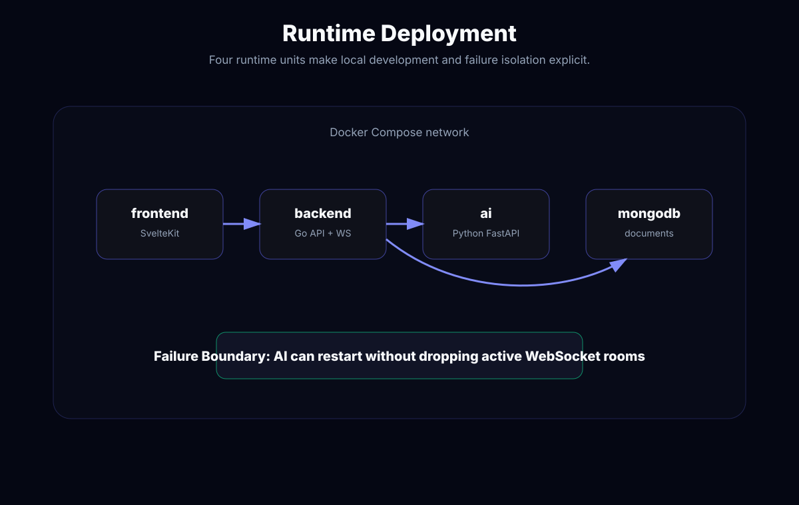
The Go backend follows a Handler-Service-Repository shape. Handlers translate transport concerns into application calls. Services own business rules such as project publication, application transitions, XP awarding, and notification creation. Repositories isolate MongoDB persistence so feature logic does not leak query details everywhere.
This structure matters because SkillForge is not a single-flow app. A project update can affect the project document, emit a WebSocket event, create a notification, update gamification state, and trigger future matching behavior. Keeping these responsibilities explicit makes the code easier to test and safer to extend.
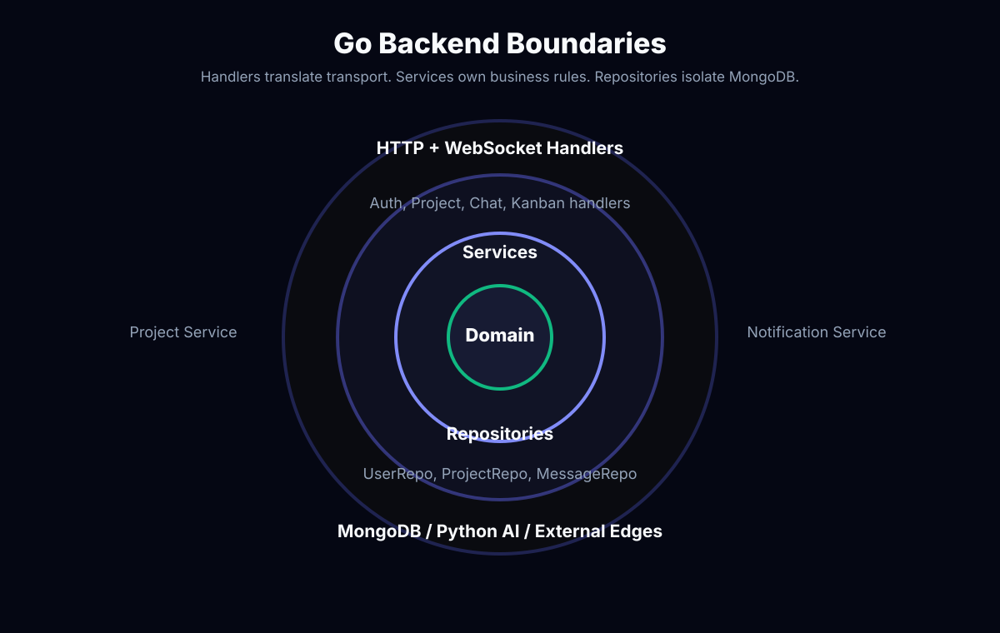
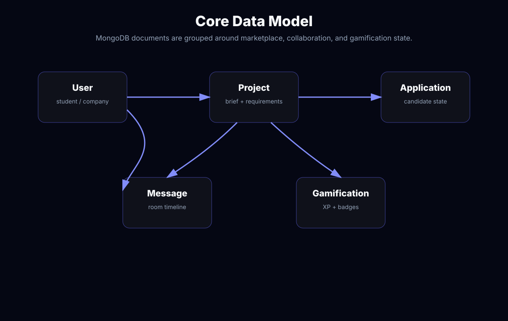
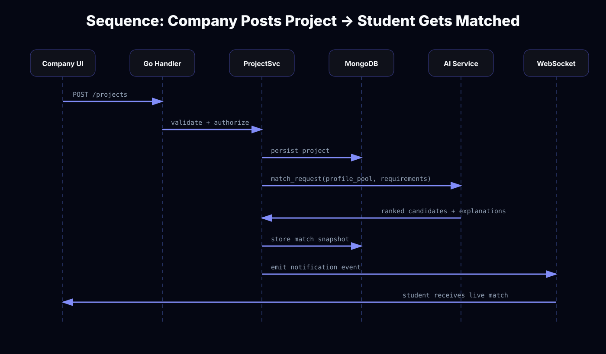
Profiles and project descriptions are reduced into comparable skill and requirement representations. This avoids brittle string matching where “backend API”, “server-side development”, and “REST service” look unrelated.
The Python service uses SentenceTransformers to map text into vector space. Each candidate can be compared against a project through cosine similarity instead of exact keyword overlap.
Matching results are returned as ranked candidates. The Go layer decides when to notify, how to store the result, and how to expose it in the UI.
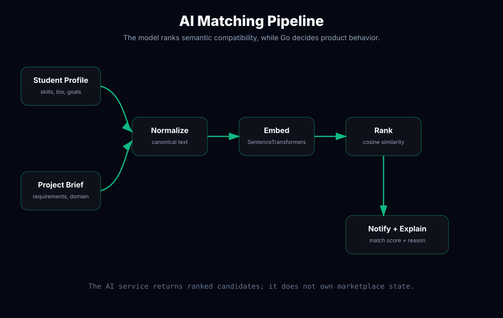
Keyword search fails when candidates and companies describe the same ability differently. “REST API”, “backend service”, “server-side integration”, and “distributed system” can point to overlapping competence but have weak token overlap.
An LLM-only matcher is slower, harder to evaluate, and less deterministic. Embeddings provide a measurable retrieval/ranking layer; an LLM can explain results later if needed.
match_score = 0.55 * cosine(profile_embedding, project_embedding)
+ 0.25 * required_skill_overlap
+ 0.10 * experience_level_fit
+ 0.10 * collaboration_signal
The important trade-off: Python is slower for high-concurrency socket management, but much better for AI model iteration. Go is excellent for concurrent network services, but the ML ecosystem is less ergonomic. Splitting the two keeps both sides honest.
The collaboration layer uses Gorilla WebSocket to keep rooms alive for chat, Kanban updates, and notifications. Instead of forcing the frontend to poll, the server becomes the source of event truth. A task movement becomes an event. A new message becomes an event. A match result becomes an event.
On the frontend, SvelteKit keeps the UI reactive without needing heavy client-side state machinery. The browser subscribes to socket events and updates the exact interface region affected by the event: chat list, board column, notification tray, or project status.
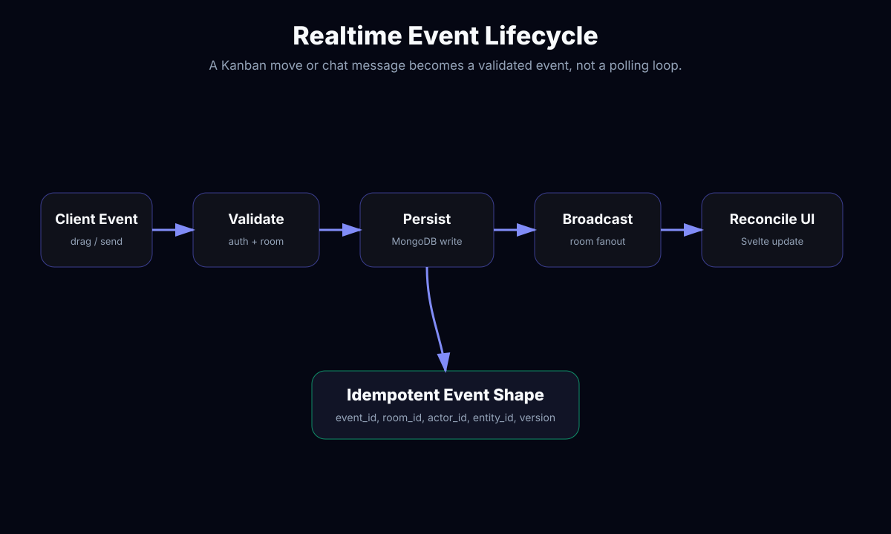
Realtime products fail in boring ways: sockets disconnect, mobile tabs sleep, users retry actions, AI calls slow down, and duplicate events appear. The architecture is more convincing when it names those failures explicitly.
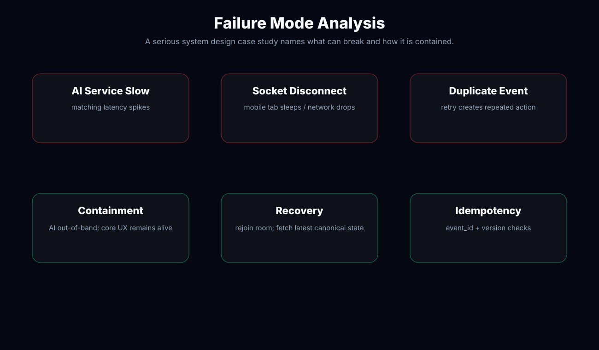
HTTP authorization is not enough. A collaborative product must validate who can join a room, who can emit an event, which entity the event mutates, and whether the event is replayed or spammed.
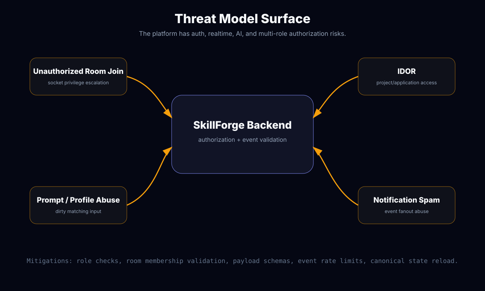
A socket connection is not trusted just because it exists. Every room join should be checked against project membership or ownership.
Realtime payloads should be schema-validated like HTTP bodies. Invalid event shapes should fail before reaching domain logic.
Notification and chat fanout can become an abuse vector. Event frequency should be bounded per actor and per room.
If this were deployed for a serious customer, the dashboard should not only show CPU and memory. It should answer product-specific questions: are matches accepted, are socket events lost, are AI requests slow, and which workflow creates the most errors?
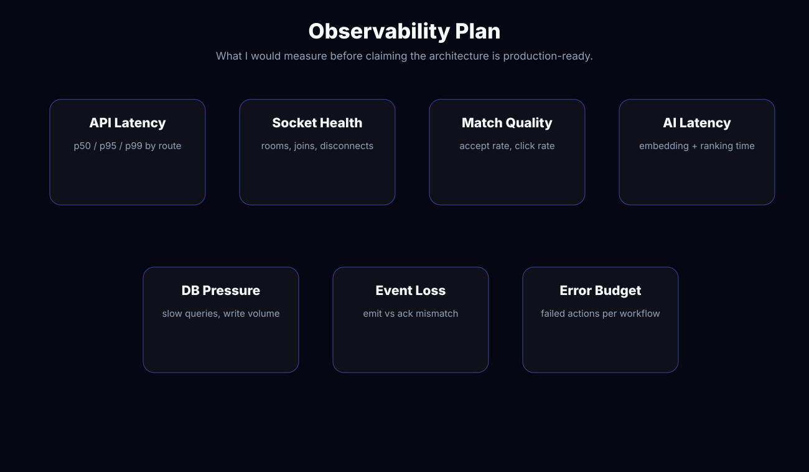
The AI service is powerful, but the contract should stay small. Go sends normalized requirements and candidate summaries. Python returns ranked candidates and explanations. The core product never depends on Python owning marketplace state.
POST /internal/match-project
{
"project_id": "p_123",
"requirements_text": "Realtime dashboard with backend APIs and MongoDB experience",
"required_skills": ["Go", "WebSocket", "MongoDB", "SvelteKit"],
"candidates": [
{
"student_id": "u_456",
"profile_text": "Built chat apps, REST APIs, MongoDB dashboards",
"skills": ["Go", "MongoDB", "TypeScript"]
}
]
}
200 OK
{
"project_id": "p_123",
"matches": [
{
"student_id": "u_456",
"score": 0.87,
"reason": "Strong backend and realtime overlap; partial SvelteKit fit."
}
]
}If AI matching is slow, chat and Kanban should still work. The Go service keeps user interaction responsive while AI work happens out-of-band.
The matching service can change embedding models or ranking logic without rewriting the core application backend.
Docker Compose defines frontend, backend, AI service, and MongoDB as separate runtime units, making the system easier to run and reason about.
These placeholders are intentionally structured. Replace them with Playwright captures from the real SkillForge app: matching screen, realtime chat, Kanban board, and project dashboard.

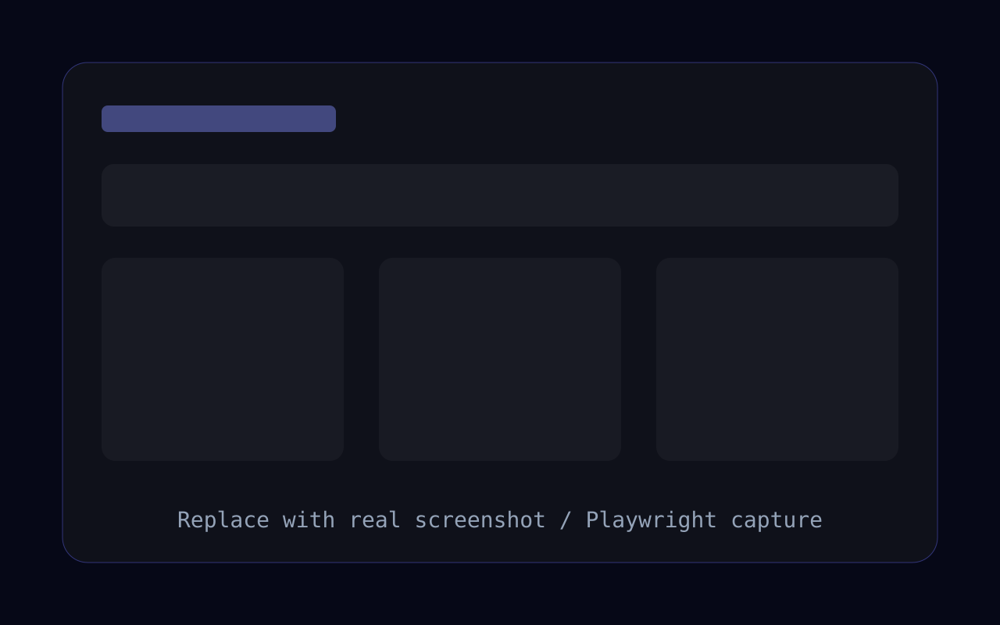
Separating Go and Python made the system easier to reason about. Go kept networked collaboration responsive; Python kept AI matching flexible. SvelteKit made realtime UI updates straightforward without overcomplicating the frontend.
The next iteration should add richer observability around match quality, WebSocket room health, and notification delivery. I would also add an admin-facing evaluation panel to compare embedding/ranking versions over time.
I build the architecture, backend, AI service boundary, and demoable product flow.
Send me your architecture problem mythonggg@gmail.com